Laundry will probably never become anyone's favorite chore, but the room it happens in makes a bigger difference than most people expect. The right setup turns a frustrating, cluttered corner into something that actually functions, and sometimes even looks good while doing it.
Function matters first, always and without exception. A beautifully styled laundry room that's still a hassle to actually use misses the real point. The best versions start with what's genuinely annoying about the current setup, fix that specific thing, then layer in style on top.

What People Actually Want From a Laundry Room
Function comes first, every time, a gorgeous laundry room that still feels like a hassle to use has already failed at its main job. Small spaces aren't a dealbreaker either; the right layout works just as well in a closet-sized room as a sprawling one. And style still matters even in a purely utilitarian space, nobody said a laundry room has to look like an afterthought.
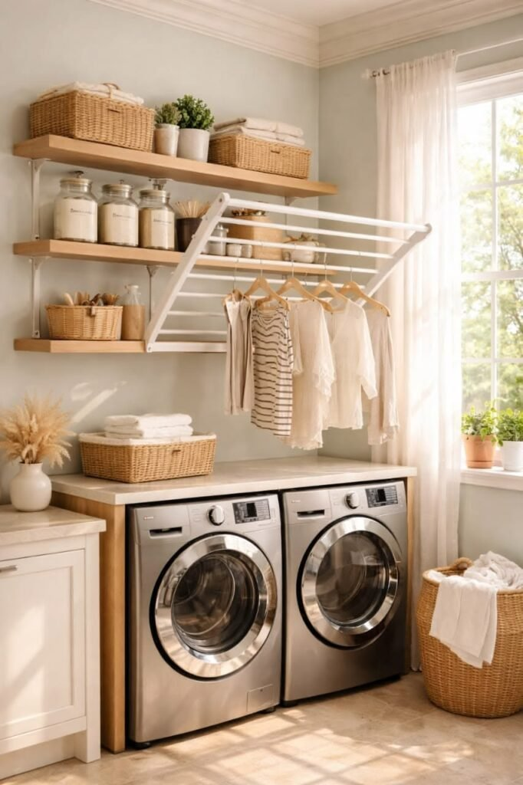
16 Laundry Room Ideas
1. Budget-Friendly, Still Looks Expensive
A laundry room upgrade doesn't require a massive budget. Some of the most effective changes cost almost nothing at all.
A peel-and-stick backsplash, a fresh coat of paint, new cabinet handles, and a few affordable baskets all create real visual impact for very little.
Small changes add up to a surprisingly big difference, sometimes it really is just the lighting or the hardware that was holding the room back.
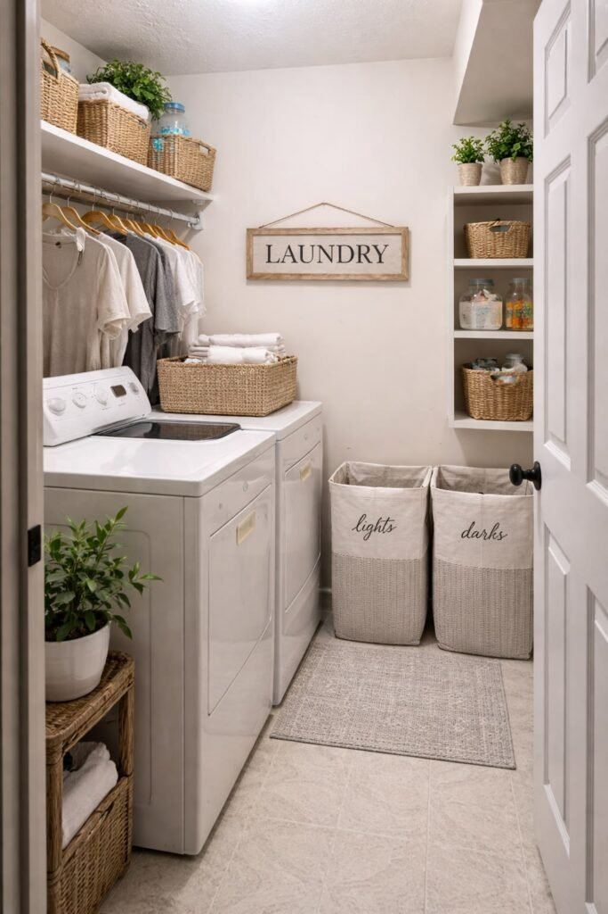
2. Built for High Efficiency
For a laundry routine that actually feels effortless, efficiency has to be the design priority, this is where practicality meets the actual layout.
A pull-out hamper for easy sorting, a built-in ironing board, and clearly labeled storage zones all cut down on wasted steps.
Fewer steps genuinely means less time spent, and nobody's looking to spend extra time on laundry if it can be avoided.
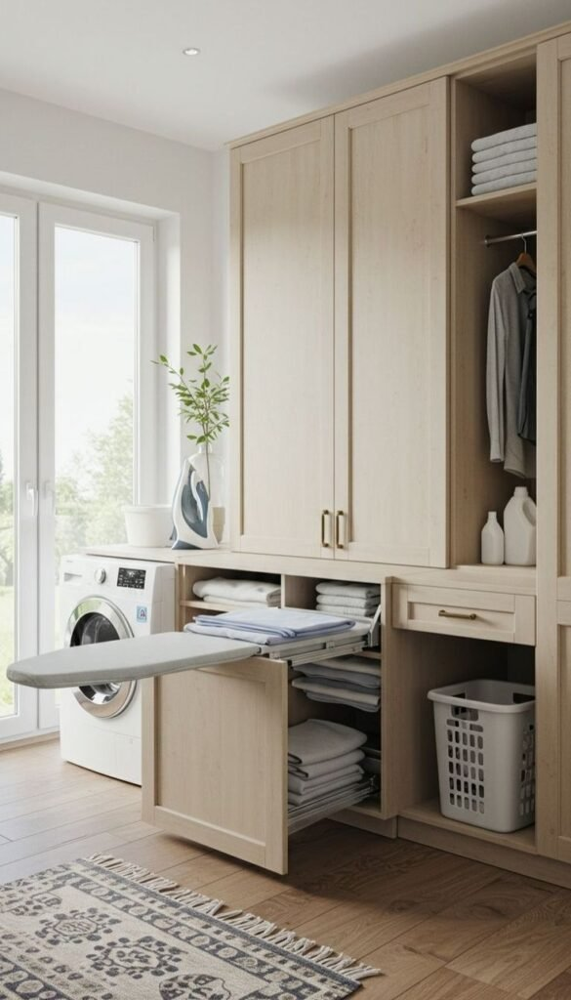
3. Multi-Functional Space
A laundry room that only handles laundry is leaving real function on the table. Turning it into a mini utility hub makes daily life noticeably easier.
Laundry combined with a mudroom, extra storage, or even a pet-washing station all stretch the room's purpose further.
It maximizes every inch of the space, and there's rarely a downside to a room doing more than one job well.
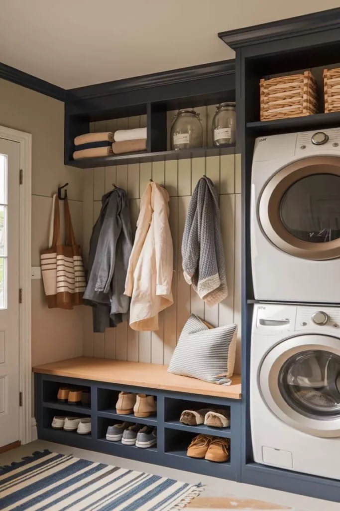
4. A Compact Layout That Maximizes Every Inch
A sprawling laundry room isn't actually required, a tight space works beautifully with the right layout decisions.
Stacking the washer and dryer frees up real floor space, corner shelving uses otherwise-awkward areas, and slim cabinets replace bulkier ones.
A layout that flows well makes the whole task feel easier, with no more bumping into things while moving through the routine.
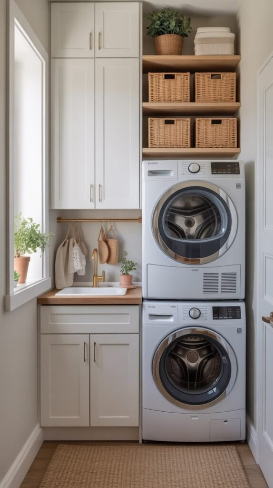
5. Wall Hooks and Hanging Systems
This one sounds almost too simple, but it's a genuine game changer. A few hooks behind the door solve more problems than expected.
Hanging clothes, laundry bags, and cleaning tools all get a home instead of piling up on the floor or counter.
Fewer things on the floor consistently means less visible chaos, a simple fix that costs almost nothing to install.
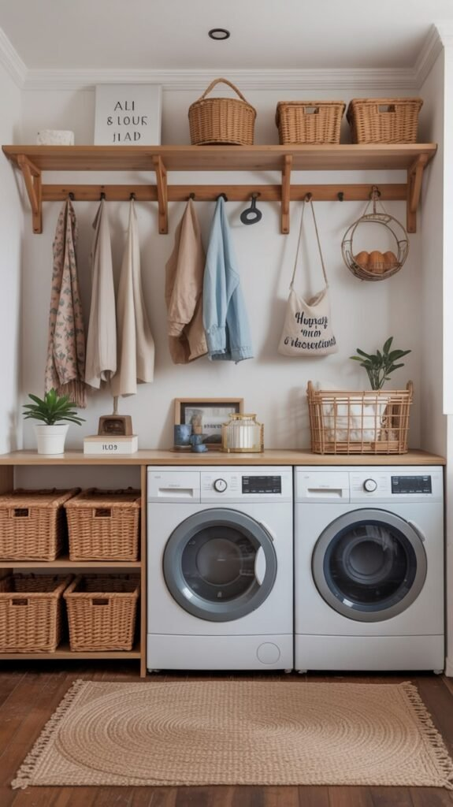
6. Stylish Basket Organization
Laundry baskets can read as chaotic or intentional, and the only real difference between the two is organization.
Labeled baskets, sorted by color or by family member, with a consistent matching design, make the whole sorting process automatic.
It saves real time later and genuinely looks better in the meantime, a small system that pays off twice.
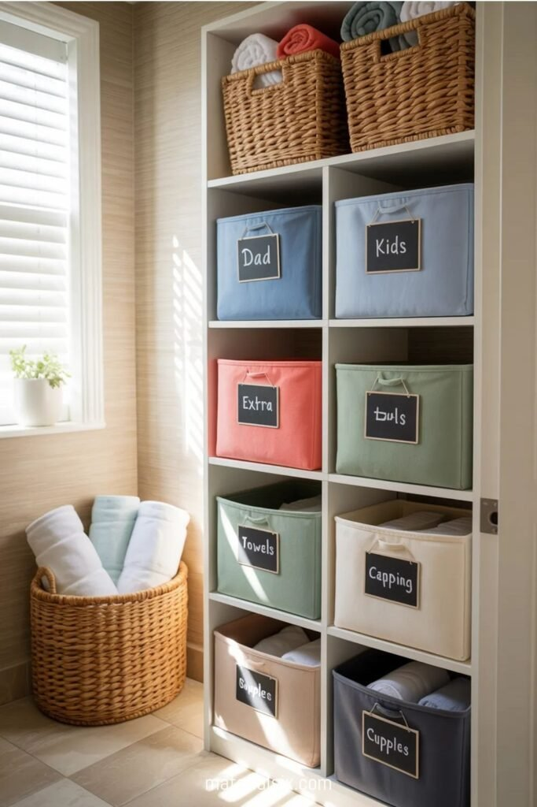
7. Open Shelving Done Right
Open shelves get an unfair reputation for looking messy, but that only happens when they're not actually styled with any intention.
Matching containers, a neutral color palette, and a few small decorative touches keep open shelving looking considered rather than chaotic.
Swapping plain detergent bottles for a few glass jars alone can make an open-shelf laundry room look genuinely styled.
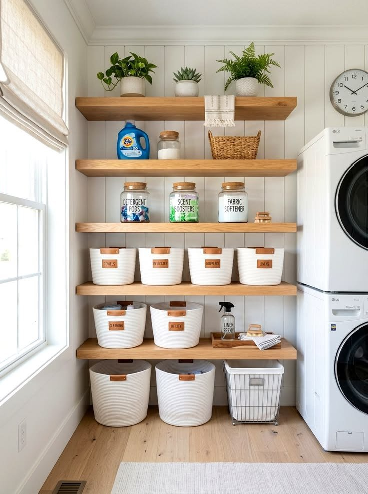
8. Smart Vertical Storage
Unused wall space in a laundry room is wasted real estate. Taking it seriously frees up considerably more room than expected.
Wall-mounted cabinets above the washer and dryer, floating shelves, and a hanging rod for air-drying items all put that vertical space to work.
Reaching up for something beats digging through a messy pile every time, and the floor stays genuinely clear in the process.
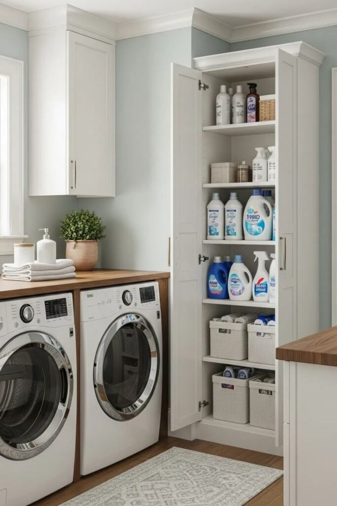
9. Minimalist, for Less Stress
Too much stuff in a laundry room translates directly into too much chaos. A minimalist approach cuts that down on purpose.
Keeping only the genuine essentials, detergent, fabric softener, baskets, basic cleaning supplies, and removing everything else clears both the room and the task.
Less visual clutter tends to mean less mental clutter too, which can make the actual chore feel faster to get through.
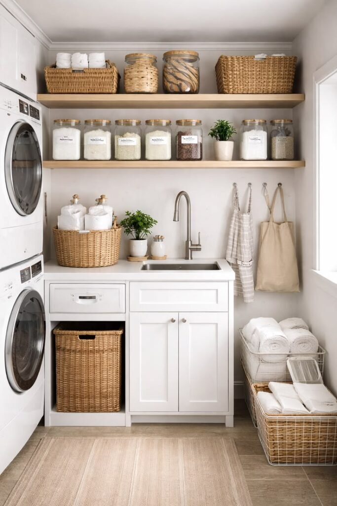
10. Hidden for Small Spaces
Not everyone has a dedicated laundry room, sometimes it's tucked into a hallway, kitchen, or closet, and that's genuinely fine.
Sliding doors, a cabinet-enclosed washer and dryer, or a full closet conversion all hide the setup when it's not in use.
A laundry setup hidden fully behind simple doors can go completely unnoticed by guests, which is often exactly the goal in a tight space.
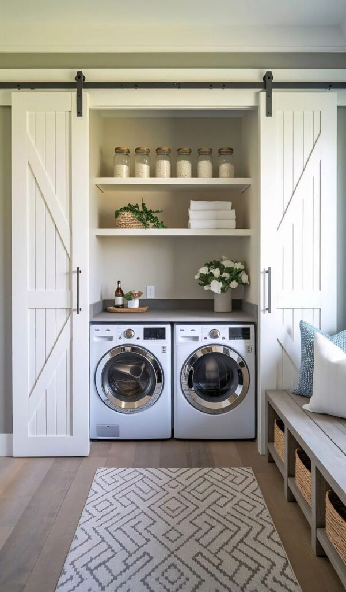
11. A Built-In Folding Station
Folding clothes on a bed or couch is common, but a dedicated folding surface changes the whole process, faster, and oddly satisfying once it's in place.
A countertop above front-load machines, a pull-out folding table, or a multi-use counter all work well for this.
Keeping that surface genuinely clutter-free matters most, pile anything on it and it stops getting used as intended within a week.
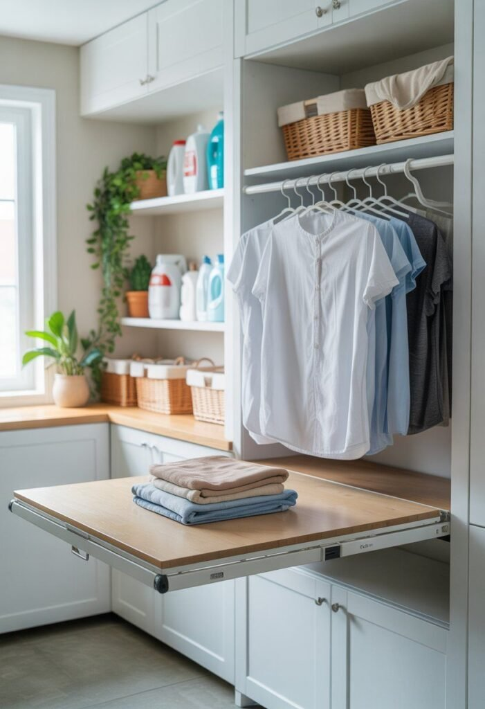
12. Bright and Airy
Lighting genuinely changes everything about how a laundry room feels. A dark one reads as a chore dungeon; a bright one reads as manageable.
Light paint colors, added LED lighting, and maximizing any available natural light all brighten the space without a renovation.
Switching to soft white lighting alone can make a room feel noticeably larger, no construction required, just smarter bulbs.
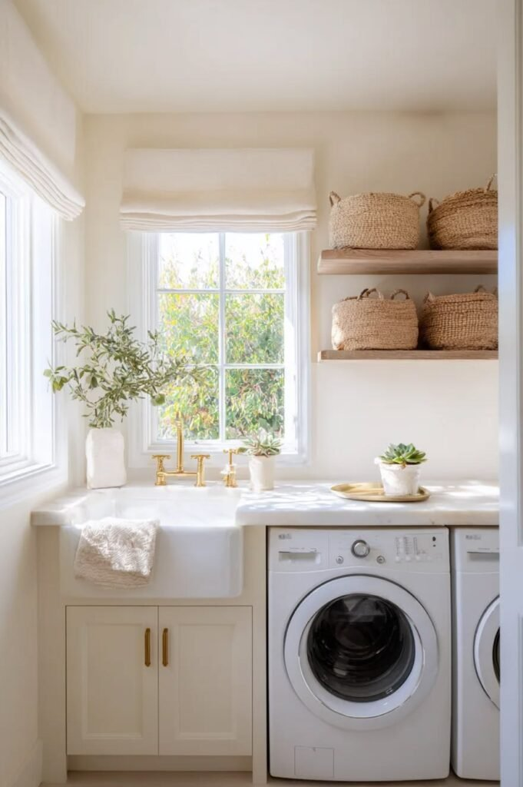
13. Luxe, High-End Touches
Nobody needs a fully luxury laundry room, but a few high-end touches can elevate the space instantly without a full renovation.
A marble or quartz countertop, gold or matte black hardware, and a genuine statement light fixture all add that elevated feel.
Even one luxe element goes a long way, if time's being spent there anyway, it might as well feel nice.
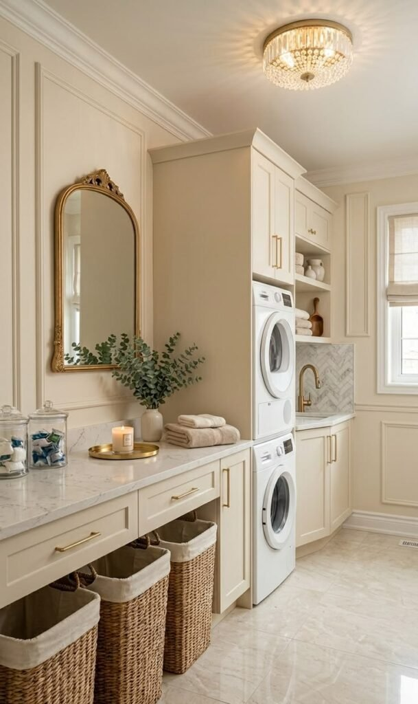
14. A Pop of Color for Better Mood
Nobody decided laundry rooms had to be boring. Adding real color changes the mood of the whole chore, not just the room.
A painted accent wall, colorful storage bins, or a patterned tile or wallpaper all bring that shift in with minimal effort.
Even a soft sage green wall can be enough to make folding laundry feel noticeably less like a punishment.
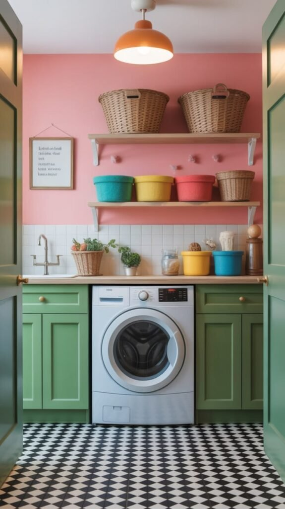
15. Modern, Clean Lines
For anyone who finds farmhouse too cozy, a modern approach leans the opposite direction, simplicity, sharp lines, and real efficiency.
Flat-panel cabinets, minimal hardware, and a monochrome color palette define the look.
A clean-looking room tends to stay clean, too, less visual clutter naturally means fewer distractions while working through a laundry pile.
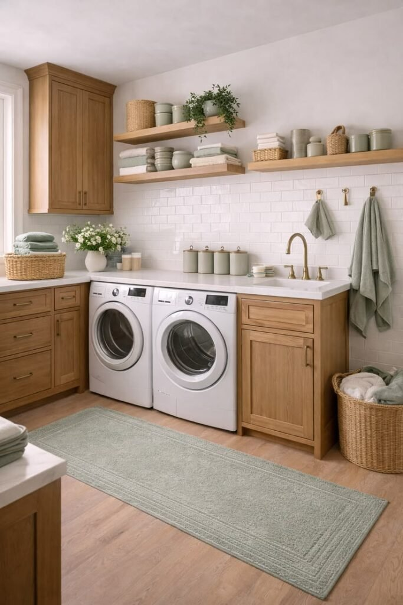
16. Farmhouse-Inspired Warmth
For a laundry room that feels warm instead of clinical, farmhouse style delivers that every time, and it doesn't require going full rustic overload to work.
Wood accents on a shelf or countertop, neutral tones like white, beige and soft gray, and a few woven baskets for texture build the look.
A simple wood countertop laid over the machines can shift the whole room from feeling like a chore zone to feeling like an actual part of the home.
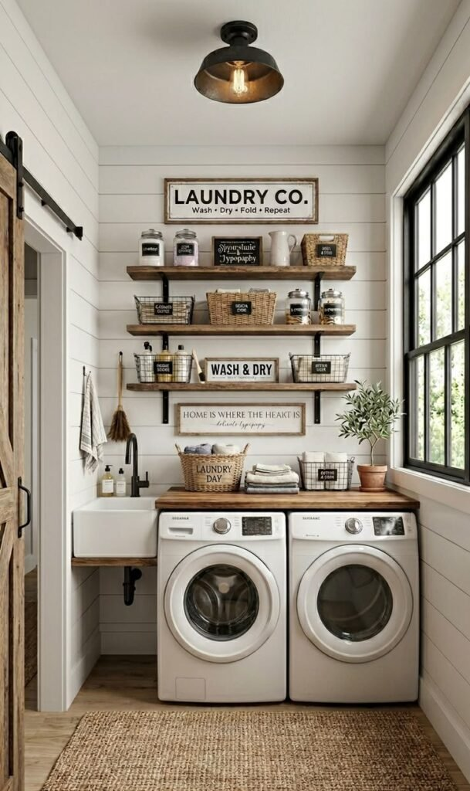
Final Thoughts
None of this makes laundry anyone's favorite activity, and that's genuinely fine. The right ideas just make the routine faster, easier, and occasionally even a little enjoyable.
Start with whatever single thing is most annoying about the current setup right now. Fix that first, then build outward from there, once the space actually works, everything else tends to fall into place.